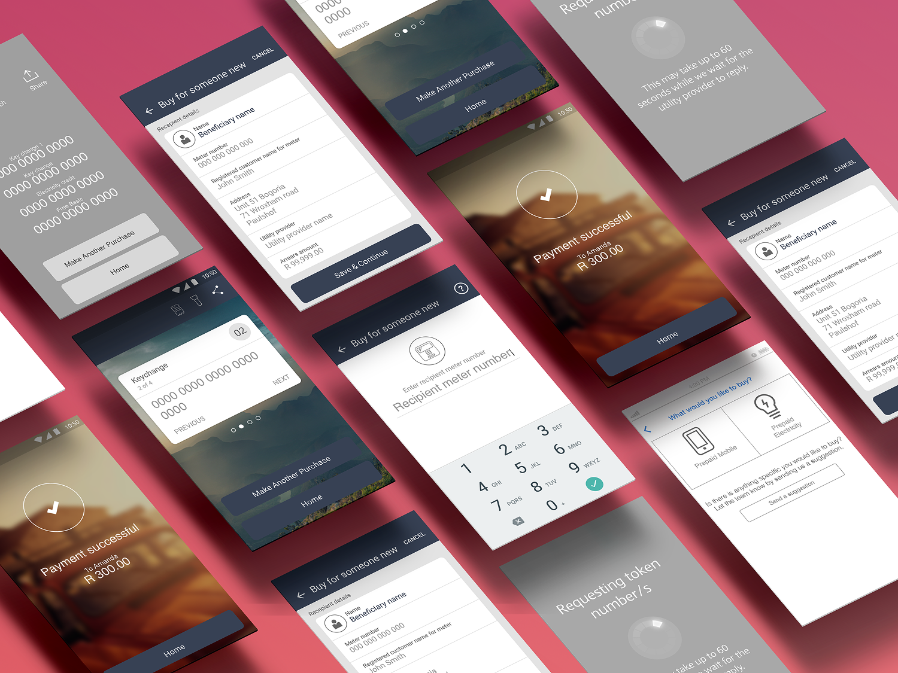
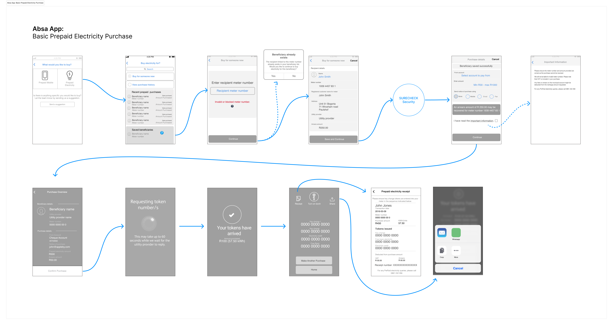
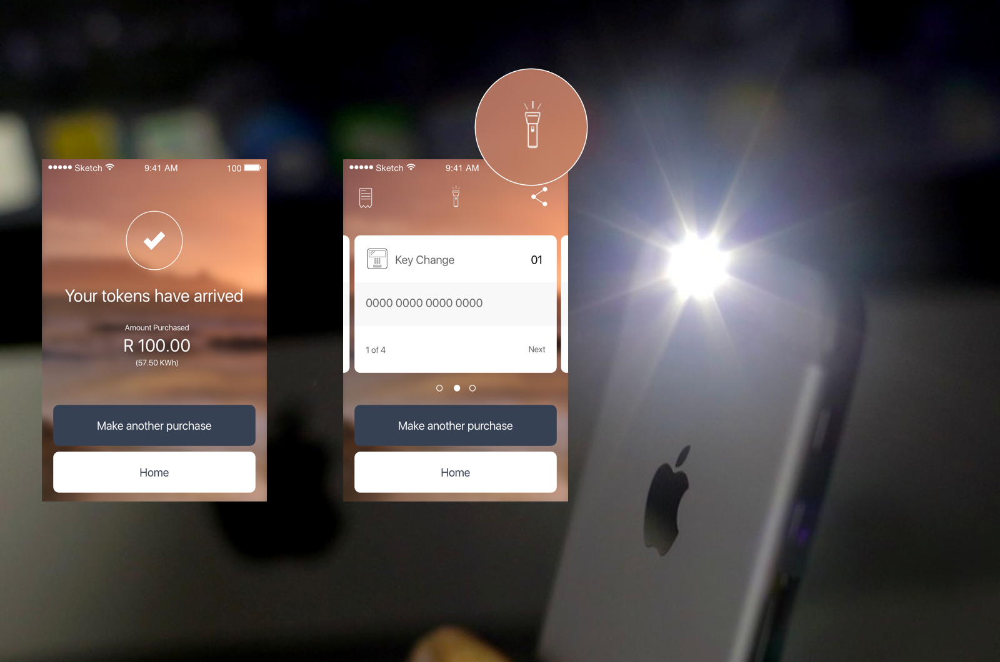
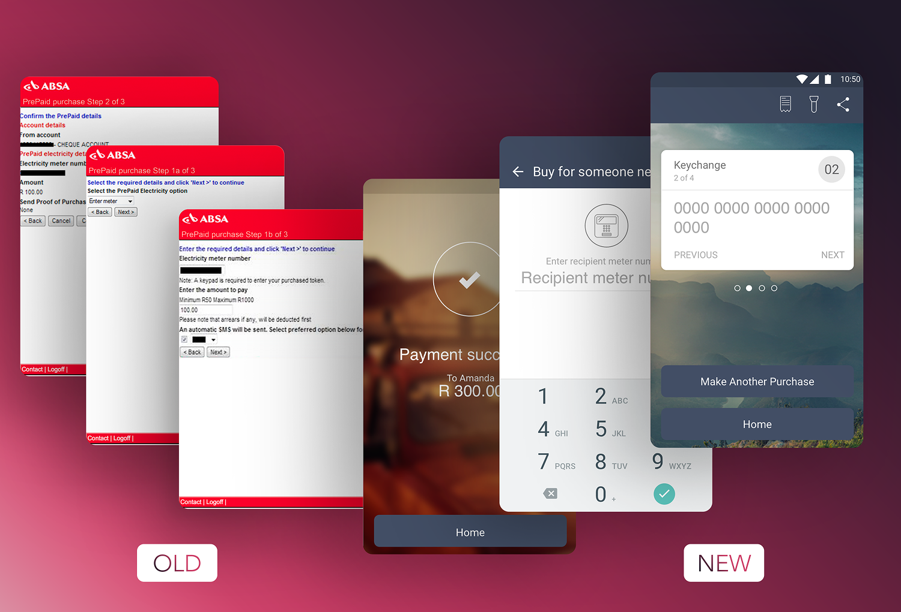

Overview
Absa Bank, back in 2016, wanted to make a common, everyday task (buying prepaid electricity) easier for its customers. Traditionally, this meant a trip to the store and fumbling with a physical slip. Our goal was to bring this process right to their fingertips through the Absa mobile app, creating a seamless and stress-free experience.

My Role
As the UX Designer and lead of this project, working closely with two UI Designers and a Systems Analyst. I aimed at being the voice of the customer and ensure the final product was both delightful to use and technically sound.

Navigating a Fractured Landscape
For a significant portion of South African households, purchasing electricity was a routine source of friction. The process was entirely manual: a physical trip to a local store or petrol station, often requiring payment in cash, to receive a slip of paper with a 20-digit token. This token then had to be manually typed into a keypad at home. This system was particularly burdensome when power ran out at inconvenient times, like late at night or during bad weather.
This wasn’t a niche problem. By 2016, approximately 90% of households had electricity, and prepaid meters were the dominant technology, especially in lower-income areas and new developments. Research from the time showed that many households, particularly those with fluctuating incomes, purchased electricity in small, frequent amounts, magnifying the inconvenience.
User Research & Insights
We conducted a series of workshops and user interviews to dive deeper into the user’s context. We mapped out the customer journey, identifying key pain points and opportunities for improvement. Our key insight was that users were often in a state of stress or urgency when purchasing electricity, a factor that needed to be at the forefront of our design considerations.
Synthesized Problem Statement
How might we design a seamless, reliable, and intuitive in-app experience for Absa customers to purchase prepaid electricity, reducing the friction of the traditional process and close a critical competitive market gap?
Crafting Simplicity from Complexity
Our design process focused on translating complex back-end requirements and diverse user needs into a flow that felt effortless. We began with low-fidelity wireframes, mapping out the core user flow. This allowed us to quickly test and iterate on our ideas before committing to a specific design direction. We then moved to high-fidelity prototypes, which we tested with a group of users to gather feedback on usability and clarity.

Key Design Solutions
- Saved Meter Numbers: To eliminate the frustration of having to re-enter a 11-13 digit meter number with every purchase, we designed a feature that allowed users to save their meter number for future use.
- Purchase History & Offline Retrieval: We hypothesized that users wouldn’t always be at home when they purchased electricity. To solve for this, we created a purchase history that stored all previous tokens, allowing users to easily retrieve them when they were ready.
- Clear Information Hierarchy: The system returned a lot of complex, and often unnecessary, information on the purchase receipt. We worked to reorganize the information hierarchy, bringing the most important details (the 20-digit token and the amount of electricity purchased in kWh) to the top.
I'm in the Dark!
During one of our design workshops, we considered the user’s environment when they’re in a pinch for electricity. It’s often at night, in the dark, when they’re trying to make dinner or simply light their home.
This led to a simple, yet powerful, micro-interaction. On the final success screen, where the token is displayed, we added an on/off torch switch. This allowed users to use their phone’s flashlight to illuminate their meter’s keypad, turning a moment of potential frustration into one of surprising delight.

Measuring Success
The prepaid electricity feature was an immediate hit with our customers. We observed a substantial increase in feature usage month-on-month, achieved organically before any commercialization efforts. This confirmed that we had solved a significant and frequent real-world problem for our customers.
A high repeat-purchase rate indicated that customers who used the feature once almost universally abandoned the old, inconvenient method, demonstrating a successful shift in user behavior. The feature not only improved the user experience but also created a new revenue stream for the bank, solidifying the value of user-centered design to the business.

Lessons Learned
This project was a powerful reminder that the most successful features are often the ones that solve the most fundamental human needs. By focusing on the user’s context and a deep understanding of their pain points, we were able to transform a mundane and often frustrating task into a simple and elegant digital solution. It was a testament to the power of a collaborative, user-centered approach to design.